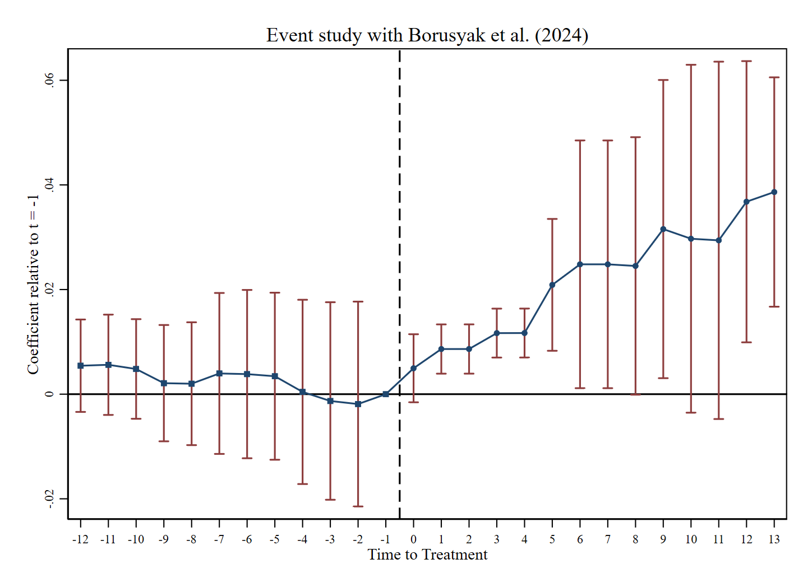

Navigating the Amazon: The Incidence of Digital Service Taxes
Digital Service Taxes are designed to tax digital firms in the markets where their users and customers are located. But who ultimately bears the tax? This paper studies how a digital platform responds to taxation and how the resulting costs propagate through the platform to sellers and ultimately consumers.
Media Mentions
- The Economist — “Trump threatens 50% tariffs. How might Europe strike back?” (May 23, 2025)
- Frankfurter Allgemeine Zeitung — “Wie sinnvoll ist eine Digitalsteuer wirklich?” (July 19, 2025)
Policy Impact
- Cited in a briefing prepared for the European Parliament Committee on Budgets (BUDG): Could a digital services tax become an EU own resource? (June 2026)

Abstract
Firms in the digital economy often pay little tax in the countries where their customers are based. In response, market countries have introduced digital service taxes on the revenue of these firms to indirectly tax their profits. We study the incidence of these taxes using data on Amazon, the largest online retailer. We find that in most countries, Amazon increased its fees by roughly the amount of the digital service tax. Firms using Amazon as a platform have largely passed these increased fees on to consumers. Large digital firms thus bear only a small part of the tax burden, but the tax may nevertheless succeed in making them less competitive relative to brick-and-mortar retailers.
Key Findings
- A one percentage point increase in the DST raises Amazon's FBA fees by around 0.5%.
- Pass-through differs across countries: it is more than full in the UK, close to full in France and Spain, and small and statistically insignificant in Italy.
- Prices for products sold through FBA increase by about 2% following the DST in France, Spain and the UK, with no significant price response in Italy.
- Consumers bear an estimated 1.5 to 2.5 euros (or pounds) for each euro (or pound) of DST revenue in the countries with substantial pass-through, indicating more-than-full pass-through.
- Pass-through is stronger for lower-priced goods and weaker for products with highly volatile prices, consistent with differences in the size of the cost shock and the role of algorithmic pricing.
- The results imply that DSTs are largely borne by domestic market participants rather than the targeted foreign digital firms, while potentially reducing the competitive advantage of digital platforms relative to brick-and-mortar retailers.
Empirical Strategy
The paper first examines Amazon's Fulfillment by Amazon (FBA) fees using variation from the introduction of DSTs in France, Italy, Spain and the United Kingdom, with Germany as the comparison country. It then studies consumer prices using identical products sold by third-party sellers using FBA and products sold directly by Amazon. An instrumental-variable analysis using DST-induced changes in platform fees provides an additional robustness check.